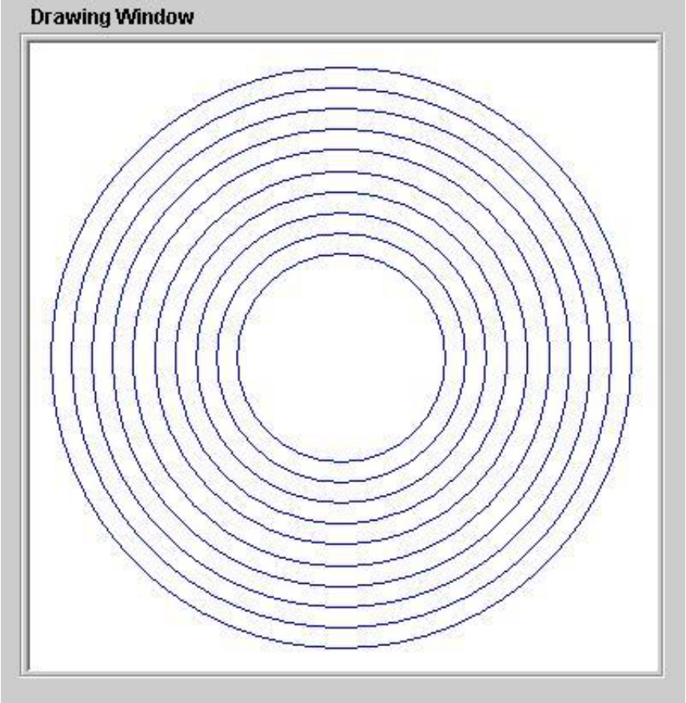

In this section we explore another feature of the Watson Graphics Language, loops, and we examine how loops can be used to create complex static images as well as animation. The WGL loop statement implements a control construct called iteration. Iteration is the process of performing an action, or group of actions, some number of times. The actual number of times the actions are to be repeated is specified in the loop statement. (As we will see in other languages support more powerful ways of controlling the number of times a loop should be executed.)
Let’s say we want to draw the image shown in . This image consists of 10 concentric circles, drawn in blue, all of which share the same center point, (150,150). The smallest circle has a diameter of 100 units (radius of 50). The next circle a diameter of 120 units (radius of 60), and so forth. The largest circle has a diameter of 280 units (radius of 140).
A series of 10 concentric circles
How should we go about creating this image? We could attempt to do so using the interactive drawing mode, but this promises to be painstaking and tedious work. It would be very difficult to draw 10 circles, all of which have precisely the same center and each with the proper diameter. For this level of precision we need the program mode. However, at first glance, this option does not appear to be much better – the prospect of defining 10 separate circle variables, entering 10 assignment statements, and 10 separate draw statements promises to be painstaking as well. There must be a better way... And, in fact, there is.
A task such as this, that involves a reasonably large number of very similar operations, can often be expressed succinctly using iteration. Recall the basic structure of the loop statement, introduced in :
To effectively use the loop statement, we should develop a problem solution that consists of a sequence of identical steps. In order to do this we must express the problem in a flexible way so that a “generic” solution step can be developed. This generic step will then be performed over and over to solve the problem. Here is an outline showing one way loop statements can be used to solve problems in WGL programs.
Notice that it is often necessary to set up the first case, or step, of the problem before entering the loop. Within the loop, the “generic step” is executed over and over, a total of COUNTER times. This generic step usually consists of solving the current case of the problem then setting up the next case. This technique allows a large number of similar operations to be expressed in a clear and concise manner.[5]
A program to draw a series of 10 concentric circles
Applying these concepts to the problem at hand, gives us the program of . This program works by defining a circle centered at (150,150) with some variable radius, which is initially set to 50. The circle is drawn and the distance variable that held the radius increased by 10 units to prepare for drawing the next circle. This process is repeated 10 times to create the pattern of concentric circles shown in .
It is important to understand that even though this program draws 10 circles, it uses only three variables: one distance variable, d1, one point variable, p1, and one circle variable, c1.[6] If that doesn’t seem to make sense to you, remember that even though 10 circles will be drawn, the program will only draw one circle at a time. Once the program has drawn a circle of a given radius, say a radius of 50, it no longer needs to retain that particular circle. Instead, the program will increase d1 by 10 and then redefine c1 in terms of the original center point and the new radius distance to prepare for drawing the next circle.
Now that we have an overview of how the program works, we examine it on a line by line basis. The first line of the program is:
color (blue)
This statement sets the drawing color to blue. Since it is the only color statement in the entire program and it occurs before any draw statements, all objects rendered by this program will be blue.
The second line of the program is:
d1 = 50
This statement places the value 50 into the distance variable d1. The reason for doing this is to prepare for drawing the first (inner most) circle which has a radius of 50.
The third line of the program contains the following statement:
p1 = (150,150)
The purpose of this statement is to initialize the point variable, p1, to the center of the 300 by 300 drawing window. The variables p1 and d1 will be used together to define our circle, c1.
The next “statement” in the program is actually a loop structure that will repeat the statements it contains exactly 10 times. This loop has the following form:
Notice that the loop will perform three critical tasks. First it will define the circle variable using a center point of p1 and a radius of d1. Next, it will draw the circle. And finally, it will increase the value of the variable d1 by 10 in preparation for the next iteration of the loop.
The first task performed by the loop can be accomplished with the following statement:
c1 = (p1,d1)
which defines c1 as a circle with center point p1, containing (150, 150), and radius d1, initially 50. Hence, the first circle defined by this program has the characteristics ((150,150),50).
In order to comprehend what this program does, it is important to understand precisely how assignment works. As you know, the general form of assignment is:
VARIABLE = EXPRESSION
where EXPRESSION is a collection of constants and/or variables, together with appropriate parentheses, that evaluate to a value of a particular type. Assignment statements work by first computing the value of the EXPRESSION and then placing that value into the variable listed on the left hand side of the assignment operator “=”. When an assignment statement is encountered with one or more variables in the EXPRESSION portion of the statement, Watson bases the actual value computed on the current values stored in those variables.
In the present example, during the first iteration of the loop, the center point of c1 will be set to (150,150) since that is the value that will be in p1 when the assignment statement is first executed. The radius of c1 will be set to 10 during the first iteration of the loop, because that is the value that will be in d1 when the assignment is executed. It is very important to realize that until c1 again appears on the left hand side of an assignment statement it will continue to have the same center point and radius even if the values stored in p1 or d1 change.
Now that c1 is fully defined, the loop’s second task, rendering the circle, can be performed using the standard draw statement.
draw(c1)
The third and final task to be performed during each loop iteration is to increase the value stored in d1 by 10. WGL includes two two special kinds of assignment statements, called “increment” and “decrement” that modify the value stored in a distance variable. Increment is used to increase the value stored in a variable by some fixed amount. Decrement is used to reduce the value stored in a variable by some amount. In this particular case we want to increase d1 by 10 so the statement is:
d1 = d1 + 10
As with all assignment statements, the right hand side expression, in this case “d1 + 10” is evaluated using the current values of the variables and then the result is stored in the variable appearing on the left hand side of the equal sign, in this case d1. The first time the loop is entered d1 has a value of 50. Since 50 + 10 equals 60, the value 60 is copied into d1 when this statement is executed – the overall effect being that d1 is incremented (or increased) by 10 from 50 to 60. Note that modifying d1 does not automatically change the definition of our circle c1, its radius is still 50. The radius of c1 will not change until the loop is repeated and the assignment c1 = (p1,d1) is again executed.
The development of the program in , which draws 10 concentric circles, is now complete.
Before moving on to our next example, I would like to discuss one final aspect of the current one. The program of contains three variables: d1, p1, and c1. Are three variables absolutely required to draw the 10 circles, or would it be possible to get by with fewer? The answer is that the program could be written using only two variables.
In general, variables are needed when you want to represent an object whose value will change, or vary, over time. An object whose value will not change can be represented by a constant. Furthermore, in the WGL language, it is necessary to use a variable for any object you want to render, since the draw and erase statements do not accept constants.
A variation of the program of that eliminates p1.
Hence, in the current problem, a variable must be used for the circle – so that it can be drawn. Also, a variable must be used for the circle’s radius distance, since that will vary over time. But, a constant could have been used in place of the variable p1 to represent the circle’s center point, since it does not vary with time. contains a variation of the program of that eliminates p1.
Next, we look at two simple modifications to the program of that have a rather large effect on its output. The first change is rather trivial, the modified program will still draw a sequence of 10 circles of increasing size, but now they will be red rather than blue. A more dramatic change will occur as a result of the program erasing the current circle before drawing the next one. The combined visual effect of these two changes will be of a single red circle that grows larger over time.
Animation works by rapidly displaying a sequence of related images. If the images are properly related and are displayed quickly enough, the human eye will perceive movement. We can harness this effect in our program simply by erasing the current circle immediately prior to defining and drawing the next one. The only modification to the program of that is required to create this animation is to insert an “erase” statement as the final task inside the loop.
An erase statement takes the form of:
erase (OBJECT)
where OBJECT is a drawable variable, such as point, line, polygon, or circle. Erase works by “redrawing” the specified object using the color white. Since white is the background color of the drawing window, the effect is that the object is “erased”. In order to erase c1, the actual statement to be inserted is:
A program to animate a circle growing larger (10 frames)
The location of the erase statement within the program is important. It needs to appear within the loop structure somewhere after the draw statement. If the erase statement were not located within the loop, it would be executed only once, not ten times. Hence, it would be unable to erase the ten circles. The reason that erase should follow the draw statement is that we certainly don’t want to “erase” the current circle before we have drawn it. Instead, it is reasonable that the last step in processing a particular circle should be to erase it.
The complete program incorporating these modifications is presented in . This program is also included in the Watson Graphics Lab as “Example Two”. I encourage you to experiment with this program by changing its drawing color, its loop counter, and its distance constants. As you do so, try to predict what the effect of your changes will be before running the program. When the program’s behavior is different than you expected, try to determine why that is so.
A final WGL program is presented in . This program draws a sequence of blue lines, all of the same length, but of decreasing height. Since the program erases the previous line before drawing the next one, the visual effect is of a blue line falling towards the bottom of the screen.
A program to animate a falling blue line (21 frames)
You should carefully trace through this program examining each statement closely until you thoroughly understand its behavior. In order to help you do this, an explanation of each statement is included. As with the previous example, it would be instructive for you to experiment with the program – to change the values of the various constants and try to predict the behavior of the resulting program. To help you do so, this program is included in the Watson Graphics Lab as “Example Three”.
Exercises for
Using the “Point”, “Line”, “Circle”, and “Polygon” buttons, together with the mouse and Drawing Window, draw a side view of a simple car.
As you create this image interactively, observe the program code that is automatically being generated. This code is an actual Watson Graphics Language program that represents your drawing. When you finish the car, execute the program using the “Run” button and watch Watson redraw the picture.
You just wrote a program! Kinda’ neat isn’t it.
In this activity you are to create a program that will draw a simple stick figure. Instead of drawing the image interactively as you did in Activity One, use the Commands (Assign, Draw, etc.) and Program Code editor to write the program.
In order to complete the activity, it is critical that you carefully plan out what the stick figure should look like and how the commands can be used to produce that image.
Write a program (using the Commands and Program Code editor) that will draw a simple house. As with Activity Two, plan out what the house should look like and how you will create it before you begin entering the actual program code.
While this planning step may seem a bit tedious right now, having a good understanding of the problem and knowing how you are going to attack it are important prerequisites for writing computer programs, especially large programs.
Write a program (using the Commands and Program Code editor) that will draw a circle and cause it to appear to move horizontally across the Drawing Window. In reality, this program will draw and erase a series of circles. It will use a loop in a manner similar to the programs of and . You might want to look back at those programs for ideas on how to proceed.
Take your time and think about what you are being asked to do as well as how you can go about accomplishing the task.
Write a program (using the Commands and Program Code editor) that will draw a circle in the lower left hand corner of the Drawing Window and cause it to appear to move diagonally from its starting point to the upper right hand corner of the window. Once the circle reaches the upper right hand corner have it “bounce” off that corner moving diagonally from the upper right corner back down to the lower left hand corner where the circle originated. This program will be similar to the one created in Activity Four.
Remember, plan it out before you code it up!
Footnotes
[5] One minor drawback of this problem solving approach is that it is slightly inefficient. During the last pass through the loop, the program objects are modified for a “next” case that is never performed.
[6] And, as we will see below, we could have actually gotten by with only two variables.